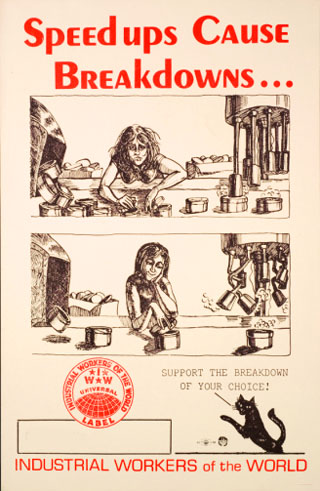

Holding the line: informal pace setting in the workplace
Submitted on Tue, 12/20/2011 - 3:51pm
By Juan Conatz - originally posted at recompositionblog.wordpress.com
Often when talking to people about their frustrations at work and the prospects for organizing, a common response is one of negativity and desperation.
“I could never get anything goin’ where I work!”
“Other people don’t care.”
“It would be too hard.”
These types of sentiments cut across industries and sectors. Even folks in officially unionized workplaces that have unaddressed grievances feel this way many times.
But while your preconceived ideas of what workplace organizing entails may clash with the obstacles you think of, other things going on in your workplace perfectly mesh with what we commonly call ‘job actions’. Slowdowns, work to rule and pace setting are all tactics that workers have used in response to management doing ans saying things we don’t like. Most commonly, nowadays, it seems like our coworkers do these things as individuals, but when it expands beyond that…well, there’s an opportunity to get somewhere.
Background
In early 2010, I was working at a warehouse as a forklift driver in Iowa City. Most of my day was spent on the shipping side of the building, pulling pallets off the production lines and staging them in a different area so they could eventually be loaded onto trucks. I also spent a fair amount of time loading these trucks, as well.
For the most part, the majority of my interaction with co-workers was limited to the other shipping forklift driver, the shipping manager and 2-3 temps who used a pallet jack to drop off pallets for me to stage.
The shipping manager, Phil, was basically a ‘lead’, with little power himself. Any power he had was mostly snitching power in that he directly answered to the Warehouse Supervisor. Phil was in his mid 40s and a casualty of the bad economy, being a recently laid of worker at a factoiry that made parts for General Motors.
The other guy I mainly worked with, Bill, was a late 30something lifelong factory & warehouse worker who was also a farmer. He was one of those guys you could tell thought of themselves as 38 going on 22. A hard drinker, he liked to talk massive amounts of shit (particularily to management) and was well liked by nearly everyone, including management. Management not only liked him, but was a bit uneasy around him, as his caustic way of interacting would often directly challenge the eupehenism laden corporate style jargon and talk of management nowadays.
Me, Phil and Bill mad a pretty decent team. Bill and I shared the work pretty evenly and even alternated types of work so we wouldn’t get bored doing the same thing over and over again. Phil went out of his way to make all the preperations neccesary to make our work as easy as possible. He even helped us out if we fell behind and covered for us if we got there late or had to run to the gas station for something (a big company policy no-no).
Increased Overtime
When the company started requiring 10-15 hours of overtime a week, we’d start the day finding out what needed to be done by each of us, so at least 1 or 2 of us could leave early. And when the company started pressuring us to take 18 ½ hour shifts, Bill and I alternated them. But while we had some independence in our work, the ‘line leaders’ who were hired on with the company and did the setup, paperwork and headed up the lines the numerous temps worked on, did not. Some of them were being pressured to work 90 hour weeks.
While some of the single guys had no problem with this, and bragged and looked forward to their larger than usual paychecks, older line leaders and those with families were stressing out.
Because the warehouse wasn’t within walking distance of where I lived and the bus system didn’t run very late, some of my co-workers would give me a ride back ome. One of the line leaders, I remember, seemed close to having a nervous breakdown due to the hours. At one point, she almost broke down crying halfway on the way to my house. The rest of us were a lot more tense and noticeably exhausted than usual.
Some of the other, older forklift drivers didn’t seem to mind the hours, though. Sure, they were aggravated…but they also walked with the limp. If you’ve ever worked in factories or warehouses, you’ve probably noticed there are people that have what I call the ‘The Factory Limp’. It’s something that you get from driving a forklift or standing on concrete for years, as well, as the inevitable injuries and long term stress such work does on your body. A lot of people in the industry above the age of 40 seem to have it. In my experience these folks have worked jobs like this for so long they’re used to the bullshit and they reluctingly accept their situation and will deflect any criticism of it because they don’t want to even think about it. Why dwell upon something you feel powerless to change?
Increasing Productivity & Our Pace Setting
While our hours were increasing, the company was also installing cameras and bringing in people from other divisions of the company to watch us work. These people were tasked with figuring out how we could work faster. Basically, their job was to squeeze as much productivity out of us as possible. Most of the lines running were already ‘fine-tuned’ for exact paces, down to how fast the the conveyor belts ran. Bill and I had experience with these scum before so we agreed to set a pace far below what we knew we could do with the hope that whatever the rate was raised to, it would still be under or around what we could handle.
Apparantly these pace setting people somehow knew this and our plan didn’t work. In fact, it seemed to possibly backfire, with Phil being moved to another shift against his will and a guy younger than all 3 of us replaced him.
Let me tell you something about young guys put into lead or managment positions. There’s really only two types. There’s the smart, most likely college educated guy who feels he is eventually headed for a better job. He usually doesn’t try to bust your balls too much and try to whip you into superworker shape.
Then there’s the not-so-smart guy who thinks he is a superworker and knows it all. In reality, he may be fast, but the mistakes he makes along the way makes his quickness pointless. The only reason he gets into one of these positions is through his ass kissing, brown nosing or willingness to rat people out quick. This person is usually a rollover for higher management, as well. This new guy, Jesse, fit this mold to a tee.
On the first week as shipping lead Jesse tried telling me and Bill that the number of trucks we were expected to load would double. Right there, we realized that we didn’t fool the pace setting people and that also they moved in someone they felt would enforce these new requirements.
Bill and I talked again about setting our own pace, this time not as low though. In any case, the amount of trucks we were now expected to load was just not possible. Even working at breakneck speed and skipping various safety measures it wasn’t possible.
So we set the number of trucks we did each day and that’s what we did. Jesse kept on our ass about it but the amount of verbal abuse dished out by bIll towards him ended that. A typical interaction went like this:
Jesse: “You guys need to pick it up. We got 9 more trucks to do after lunch”
Me: “Well, that ain’t gonna happen. That’s impossible.”
Bill: “Hey, motherfucker, if you want this shit done, how bout getting your finger outta your ass, and then get off your fat fucking ass and help us?!”
Jesse: “That’s not my job.”
Bill: “That’s not your job? Then what is? Being a fat fucking cocksucker that’s constantly bitching? Get the fuck off the dock and let us work!”
Of course, even though I didn’t usually partake in this, I was always cracking up laughing and needless to say, we were eventually talked to by management.
For a couple days, Jesse and higher management left us alone. Jesse actually, somewhat out of the blue, began being nice to us and even buying us lunch. I’m assuming upper management schooled him in some standard management skills on how to handle angry employees as far as being friendly and all that. It’s an old technique: try and gain sympathy and gratitude through kind acts and workers will do want you want more easily. Most small businesses I’ve worked for have excelled at this strategy. If it was an effort to get us to work harder and meet this new quota, though, it failed.
Free pizza or no free pizza, we were now being made to work way more hours. We were now up to 85 hours a weeks like many others. Personally, it was starting to break me down. Hardly any sleep or days off was starting to make me see movements, and then eventually actual people out of the corner of my eye when I was driving. When I would jerk my head left or right there would be nothing there.
Organizer Training and Going out in flames
Right around this time I took advantage of my first weekend off in 3 weeks by heading up to the Twin Cities. I knew some people in the IWW through my membership in the WSA and found out there was an organizer training. It ended up being really useful and realized me and Bill were already doing some of the types of things you do when you organize.
Coming back armed with previously, only vaguely known knowledge, I started to try and identify how we could get some more resistance to the increased hours and productivity. But looking back, I can see that the hours were starting to get at me and was making bad judgements and not exploiting certain opportunities that came up.
For instance, during a cigarette break, Bill brought up an idea of circulating a petition against the hours and for hiring more people and then bringing it to the plant manager in a confrontational way. I tried to encourage him doing this, but in retrospect, I should have tried to meet up with him outside work so we could talk and get other people on board with creating this.
My work started getting sloppier and then I began getting confrontational with Jesse in the same way Bill was.
One day I walked in and learned that me and Bill had been split up and I was now going to work in a role that equal even more hours and less days off. Unwisely, I exploded and got into a screaming match with the shipping manager, threatening to walk off the job, which I did, telling him to fellate me while yelling various insults towards his mother.
Conclusion
Although formal organizing efforts never happened on this particular job, I learned quite a bit. I learned how my own intense hatred of my work conditions and management could interfere with my goals. This is something I still struggle with. At times I’d rather try to provoke a fist fight or create a memorable scene rather than figure out a way to deal with my anger in a productive manner.
I also learned alot about how we as workers will often be a part of what Stan Weir called ‘informal work groups’. We come up with our own ways to link with each other and resist what management wants out of us. And while the working class has changed in many ways since strikes and fighting back were fairly common, there is always going to be a natural urge to push back at this. These ‘informal work groups’ are the building blocks of solidarity and formal organizing campaigns. Realizing and utilizing this can only benefit our efforts to escape the daily grind of work and capitalism.